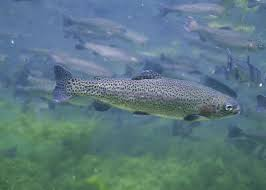

Ashlei's Smoked Trout Dip

Ingredients
These are the ingredients that will be needed for this recipe:
- 8 ounces smoke trout, skin removed, flaked
- 8 ounces cream cheese
- 1/3 cup sour cream
- 1 tablespoon Worcestershire Sauce
- 1 green onion, finely chopped
- 1 teaspoon garlic powder
- 1 teaspoon paprika
- 1/2 teaspoon prepared horseradish, optional
- 1 pinch cayenne pepper
- ground black pepper to taste
Cooking Directions
Follow these steps to make this delicious food:
- Stir trout, cream cheese, sour cream, Worcestershire sauce, green onion, garlic powder, paprika, lemon juice, horseradish, cayenne pepper and black pepper together in a bowl until well blended. Cover and refrigerate for 30 minutes before serving.